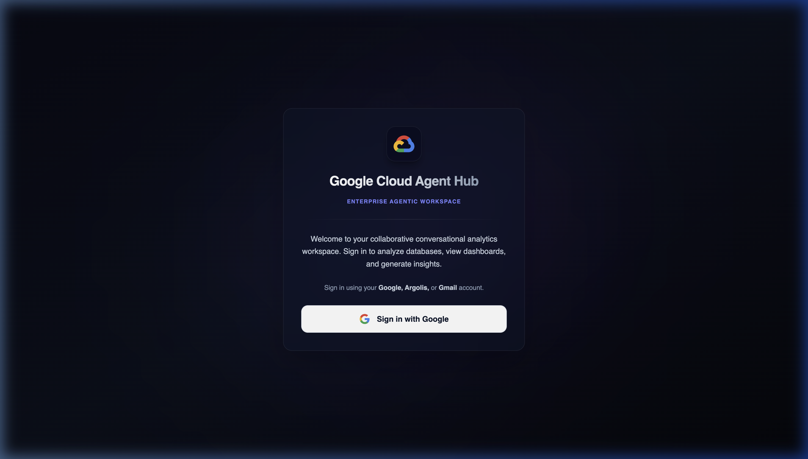
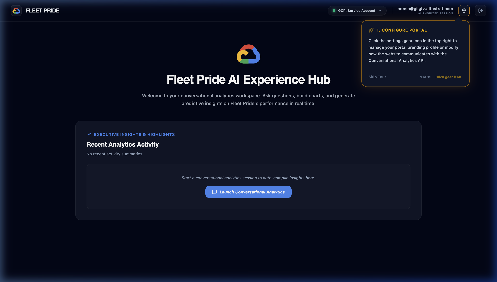
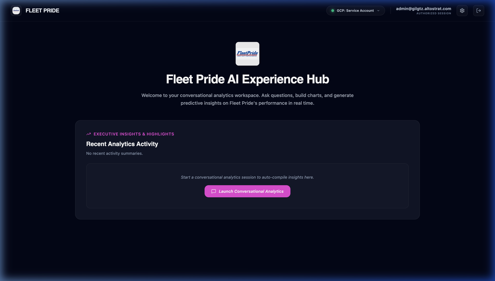
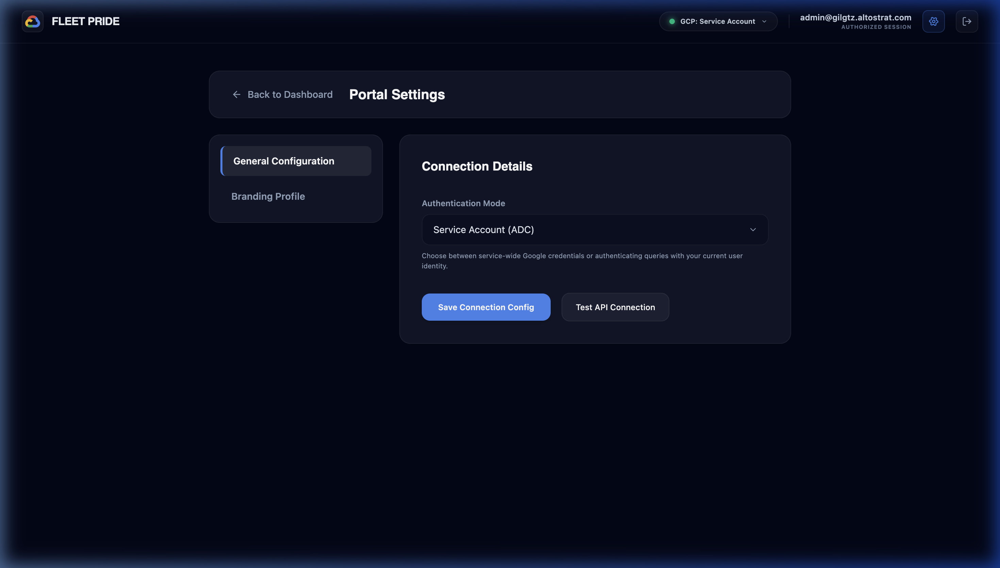
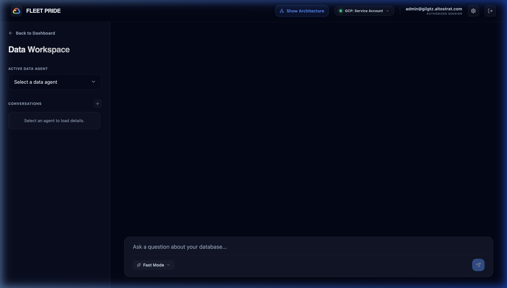
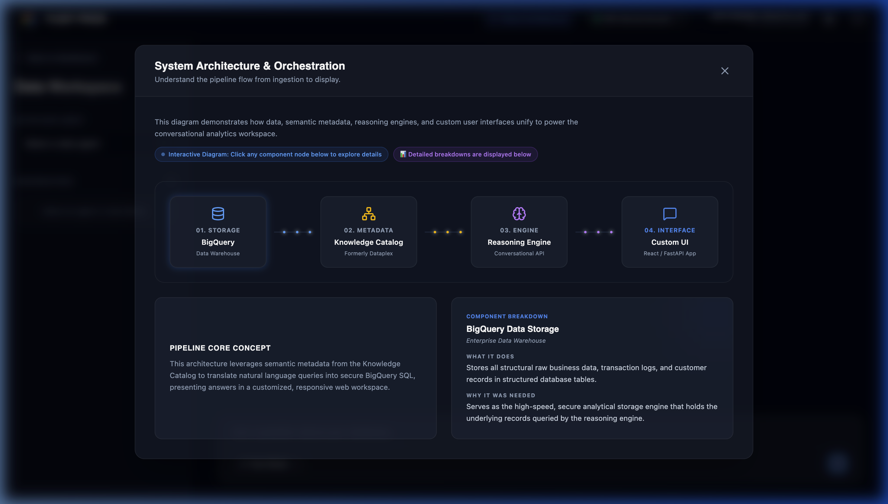

Visual User Guide & Walkthrough Screens
💡 Tip: Press Ctrl+P (or Cmd+P on Mac) to print this page or save it as a high-fidelity PDF document.
The application is protected by a secure Google SSO credential check. When internal restrictions are enabled (RESTRICT_TO_GOOGLE=true), only verified Google corporate accounts (@google.com) or Argolis demo accounts (@*.altostrat.com) are allowed to authenticate and access the backend.

Upon first login, the user is greeted by a fluid, 12-step guided onboarding tour. The popups highlight key controls such as the settings gear, layout themes, navigation controls, and architecture diagram. On mobile screens, these tooltips dynamically center at the bottom of the viewport to ensure responsive layout compliance.

The home dashboard includes summary cards and quick shortcuts. Users can dynamically switch dashboard configurations between supported retail brands (e.g. Home Depot, Target, Tractor Supply Co.), which changes theme color schemes, SVG logos, and default analytical greeting cards.

The settings view allows users to configure the active credentials mode (Service Account vs User SSO), search Wikidata for brand-specific corporate logo assets, configure greeting text, and customize metadata variables.

The chat interface translates natural business questions into optimized BigQuery SQL queries. Responses include step-by-step thinking outputs (when using In-Depth Analysis mode), interactive data tables, Vega-based data charts, and automated executive takeaways.

Accessible from the global header, the "Show Architecture" button displays a simplified 4-node flow chart mapping Data Storage (BigQuery), Knowledge Catalog (Dataplex), Reasoning Engine (FastAPI & Gemini), and Custom UI (React). Consequent drilldowns reveal detailed component properties.
